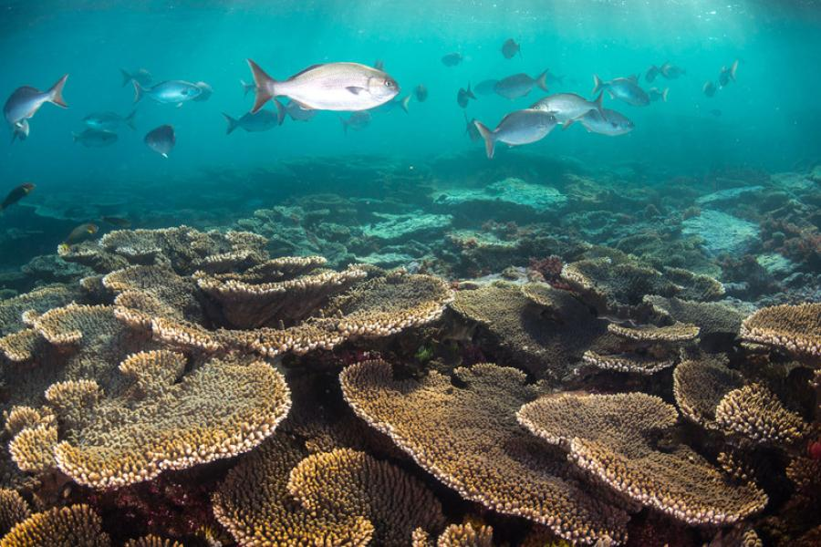
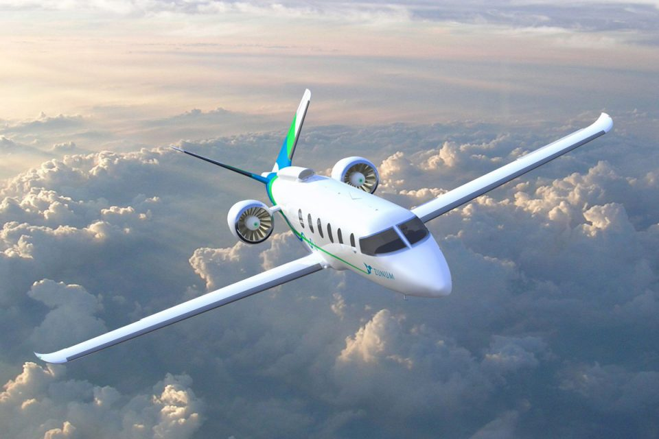

Descoberta Espacial Fascinante:
Astrônomos, por meio de telescópios avançados, identificaram um novo buraco negro supermassivo no centro de nossa galáxia, desafiando teorias existentes sobre a formação de buracos negros. Com uma massa 10 vezes maior do que se imaginava, este buraco negro está lançando luz sobre o mistério da origem desses monstros cósmicos. Os cientistas acreditam que esta descoberta revolucionará nossa compreensão do cosmos e poderá oferecer insights sobre a evolução das galáxias. Eles agora planejam realizar mais estudos para desvendar os segredos deste fenômeno cósmico único.
Marte Mais Acessível:
A NASA anunciou planos ambiciosos para abrir Marte ao turismo espacial até 2030, em parceria com empresas privadas de exploração espacial. Os turistas terão a oportunidade de vivenciar a vida em Marte por períodos estendidos, marcando um novo capítulo na exploração interplanetária.
Criptomoedas em Alta:
O Bitcoin atingiu um novo recorde histórico, ultrapassando a marca dos US$ 100.000 por unidade, impulsionando o interesse global nas criptomoedas e estimulando discussões sobre seu papel no futuro das finanças.
.jpg)
Salvando a Grande Barreira de Coral:
Cientistas australianos estão utilizando uma técnica de restauração inovadora que envolve a reprodução de corais em viveiros e o subsequente replantio nas áreas danificadas da Grande Barreira de Coral. Essa abordagem está oferecendo uma nova esperança para a preservação deste ecossistema crítico.
Energia Limpa em Ascensão:
A produção mundial de energia solar superou a do carvão pela primeira vez, representando um marco significativo na transição global para fontes de energia mais limpas e sustentáveis, à medida que governos e empresas investem em infraestrutura solar.
.jpg)
Voando Mais Alto com Aviões Elétricos:
A Boeing revelou um avião elétrico de longo alcance que promete revolucionar a indústria da aviação. Este avião eco-friendly visa reduzir significativamente as emissões de carbono e o ruído, oferecendo viagens aéreas mais ecológicas e silenciosas.
Limpando o Espaço:
A Agência Espacial Europeia (ESA) lançou com sucesso uma missão robótica destinada a limpar detritos espaciais em órbita terrestre. Essa iniciativa pioneira está contribuindo para a segurança do ambiente orbital, reduzindo o risco de colisões com satélites ativos.
.jpg)
Artefato Antigo Descoberto:
Arqueólogos tiveram uma descoberta surpreendente ao desvendar uma cidade maia previamente desconhecida nas densas selvas da Guatemala. O local revelou tesouros arqueológicos, estruturas antigas impressionantes e insights fascinantes sobre a civilização maia e sua história.